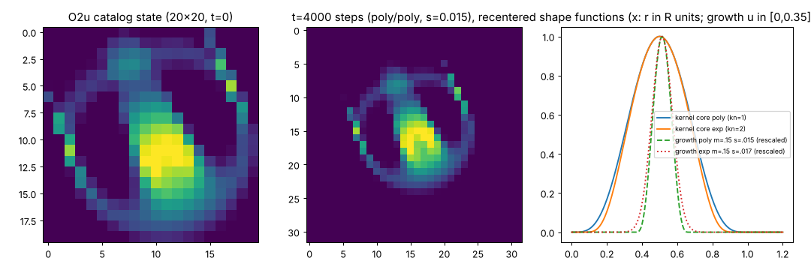

Room 1 · Specimen S001
The ruler: Orbium unicaudatus
Every natural history museum has a type specimen, the one individual that defines its species. Ours is Orbium, the creature Lenia's software opens with and the one its inventor's paper studies most closely. We keep it the way a lab keeps a reference weight: not because it is rare, but because everything else is measured against it.

The specimen card
| Stable ID | S001 |
|---|---|
| Catalogue | Exokernel → Orbiformes → Orbidae → Haplorbinae |
| Source | Chakazul/Lenia animals.json, pinned commit adfc542 |
| Rule | R = 13, T = 10, μ = 0.15, σ = 0.015, polynomial kernel and growth |
| World | 128 × 128 cells, wrapping at the edges |
| Mass | 0.4358 ± 0.0011 (in units of R²) |
| Size | gyradius 0.438 R |
| Speed | 0.479 R per time unit, at this timestep |
Values from the S001 dossier (Lane 1) and the
Lane 2 baseline run S001-37369303c7.
Measured twice, by programs that never met
Lane 2 built the museum's simulator. Lane 3 wrote a second one from the written rules alone, without reading Lane 2's code. Both ran Orbium for 20 000 steps.
The final worlds were bitwise identical, and a third path that avoids the Fourier transform agreed to about two parts in a million. Orbium glides stably under the baseline rule C001indep. checked. At R = 13 its average mass has already converged: finer grids do not change it C014indep. checked.
But even a ruler has a grain
Two things you might read off the portrait are not, strictly, facts about the animal.
Orbium always travels at 68.2° in its catalogue orientation, in a dead straight line, and covers 0.479 kernel radii per time unit.
The heading is chosen by the grid. Rotate the starting pattern a little and the creature snaps to one of a set of preferred lattice directions C011indep. checked. The speed depends on the size of the time step: the same animal is about 16% slower at T = 10 than its smooth-time limit C009observed, so "0.479" is a number about this simulation, not about Orbium C010num. fragile.
This is the museum's recurring theme. A finite grid and a finite clock are part of the creature's world. Behaviour that comes from them is real and worth recording, but it is not the same as behaviour of the continuous ideal. The next room is about the most memorable case.
